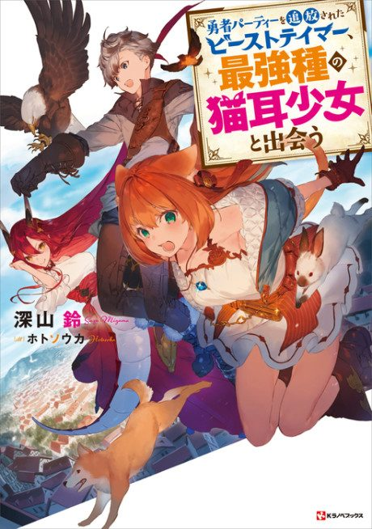

Beast Tamer
勇者パーティーを追放されたビーストテイマー、最強種の猫耳少女と出会う
After the anime, read the light novel from Volume 3.
6.8AniList score
—Animeter, no votes yet
13episodes
Anime finished. Where does the story go next?
Start at Volume3
The anime adapts the first two light novel volumes, so start at volume 3.
12ongoing
Season 1Start reading here